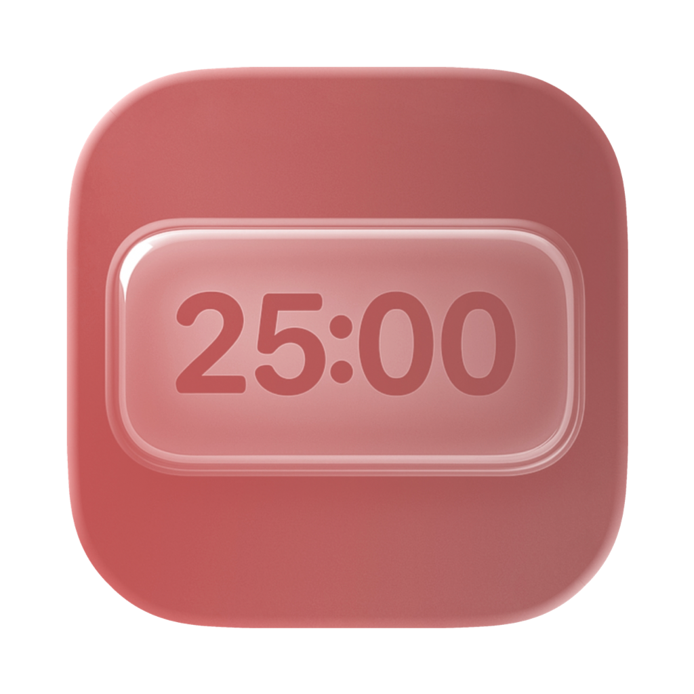

I'm a computer science student and here I will be sharing my projects! You can follow me on Twitter or Instagram.
Apps & Projects
Currently, I'm working on my first iOS app called Flashy. In college, I'm also learning Assembly, Haskell, C, and C++.
Flashy
A simple flashcards app with AI. Create and study flashcards from text or PDFs.
Download on App Store

Cute Pomo
A delightful Pomodoro timer for macOS that stays visible on your desktop
Download on App StoreCute Pomo Preview
Take a quick look at Cute Pomo in action—a floating Pomodoro companion for macOS that keeps you focused with a gentle, persistent presence.
Try Cute PomoTimeline
2022–2025
University
2020-2022
Web Development Course